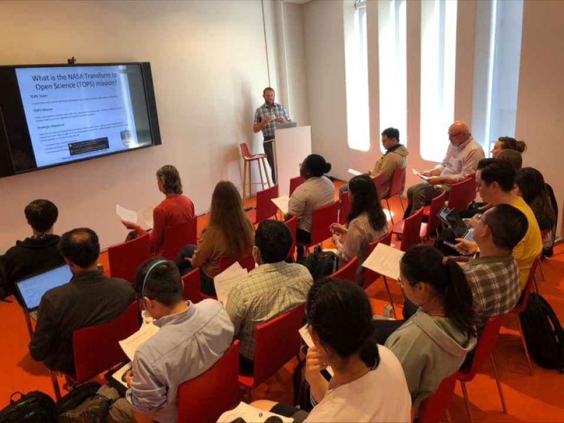

About SCHOOL
...

TOPSTSCHOOL Development Team
Open Science Contributor
Science Core Heuristics for Open Science Outcomes in Learning (SCHOOL), part of the NASA Transform to Open Science (TOPS) Training (TOPST) initiative.
Project Overview
SCHOOL’s objective is to develop curriculum for ScienceCore that incorporates NASA Earth Science Applications use cases and data into the data science life cycle as part of NASA’s Open Source Science Initiative (OSSI). The project consists of seven 2.5 hour learning modules designed to fit both online (self-led) and in person instruction. Modules focus on demonstrating the data science life cycle with varying themes: Water, Health and Air Quality, Environmental Justice, Disasters, Wildfires, Agriculture, and Climate.
Thematic Depth. Each module explores a critical theme affecting our planet, including:
Water. Understanding water systems in a changing climate.
Air Quality. Connecting air quality data to public health outcomes.
Environmental Justice. Promoting equitable solutions to environmental challenges.
Disasters. Using data to predict, prepare for, and mitigate natural disasters.
Wildfires. Understanding and managing wildfire risks in vulnerable areas.
Agriculture. Enhancing food security through data-driven decision-making.
Climate. Addressing the urgent challenges posed by climate change.
Data Science Life Cycle Integration. Modules guide learners through the data science life cycle, demonstrating how to analyze, visualize, and derive insights from NASA datasets.
Open Science Focus. By emphasizing transparency and collaboration, SCHOOL equips learners with the skills to contribute meaningfully to the global Open Science community.
TOPSTSCHOOL Module Structure
Each 2.5 hour thematic module, broken down into five 30-minute lessons, will demonstrate the full data science life cycle and connect those processes with open science principles.
Module Component |
Data Science Life Cycle/Open Science Integration |
Example Activity |
|---|---|---|
Lesson 1 |
Generation and collection |
Identify and obtain data sources. Generation could include spatializing tabular data. |
Lesson 2 |
Processing and storage |
Data integration tasks are completed. Local and cloud storage options are demonstrated. |
Lesson 3 |
Management and analysis |
Creation of metadata to inform uses and structure. Statistical techniques applied. |
Lesson 4 |
Visualization and interpretation |
Creation of charts and maps. Interpretation thought questions and examples from other work. |
Lesson 5 |
Open Science and Community Engagement |
How to share these results openly. Practice of engaging with existing and emerging community networks. |
School Pedagogy
Pedagogy
At SCHOOL, we believe that how we teach is just as important as what we teach. Our pedagogy is rooted in principles of inclusive teaching, active learning, and thoughtful evaluation. These core values ensure that every learner feels welcomed, empowered, and supported throughout their educational journey.
Find all of the relevant material for modules and events on the TOPSTSCHOOL Zenodo here.
Inclusive Teaching
Education should reflect the richness of the world we live in. At SCHOOL, we strive to create an environment where diversity is not just acknowledged but celebrated. Here’s how we foster inclusivity:
Breaking Down Barriers. Course content includes examples that cross cultural, gender, and socioeconomic boundaries, ensuring relevance for all learners.
Diverse Modes of Learning. Materials are delivered through a variety of methods, including videos, visuals, interactive exercises, and text. This multimodal approach ensures that learners with different preferences and abilities can engage fully.
Accessible Design. Every module is crafted to accommodate learners from diverse backgrounds and skill levels, eliminating assumptions about prior experience.
Active Learning
We want learners to not just consume knowledge but to actively engage with it. Active learning encourages students to reflect, analyze, and apply concepts in real-time. Here’s what you can expect:
Critical Thinking. Activities are designed to go beyond rote memorization, prompting learners to ask why and how.
Engaging Tasks. Modules include dynamic exercises such as coding challenges, data visualization tasks, and discussions.
Interactive Content. Even in self-led settings, learners are guided to interact with content, such as exploring datasets, connecting concepts to real-world scenarios, or engaging in problem-solving exercises.
Thoughtful Evaluation
Effective learning relies on clear goals and constructive feedback. SCHOOL employs a rigorous evaluation process to help learners succeed:
Transparent Expectations. Learners know from the start what is expected and how their progress will be assessed.
Timely Feedback. Frequent and detailed feedback ensures that students can refine their skills as they learn.
Guidance Through Exemplars. Clear examples of successful outcomes help learners aim for excellence.
Our goal is to create a supportive feedback loop where learners feel encouraged and motivated to improve continuously.
Why Join SCHOOL?

The SCHOOL Project isn’t just about education; it’s about building a community of learners and researchers committed to advancing Open Science. By participating in SCHOOL, you’re contributing to a brighter, more collaborative future for science and society.
Are you an educator looking to inspire your students with real-world applications of science?
Are you a student eager to develop skills that will shape your career and make a difference?
Are you a researcher passionate about sharing knowledge and fostering global collaboration?
If so, SCHOOL is the perfect place for you to make an impact. Together, we can create a world where knowledge knows no boundaries, and science is accessible to all.
Project Timeline
The SCHOOL Project represents a collaborative journey toward reshaping how Open Science is taught and learned. Our timeline spans two years, beginning on July 1, 2023, and culminating on June 30, 2025, offering ample opportunities for contributions, feedback, and refinement as we move forward together.
To ensure the smooth and efficient development of SCHOOL’s learning modules, we are adopting the Scaled Agile Framework (SAFe) methodology. This proven approach emphasizes collaboration, flexibility, and incremental progress, allowing us to deliver thematic content regularly and in manageable stages.
Learn More
Find all of the relevant material for modules and events on the TOPSTSCHOOL Zenodo here.